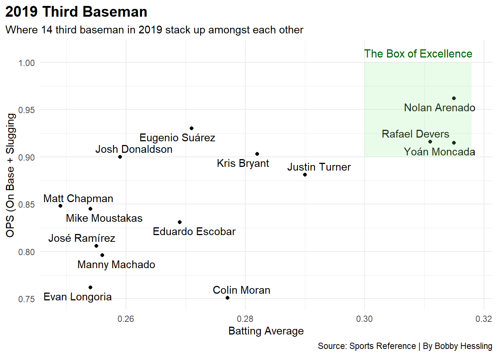
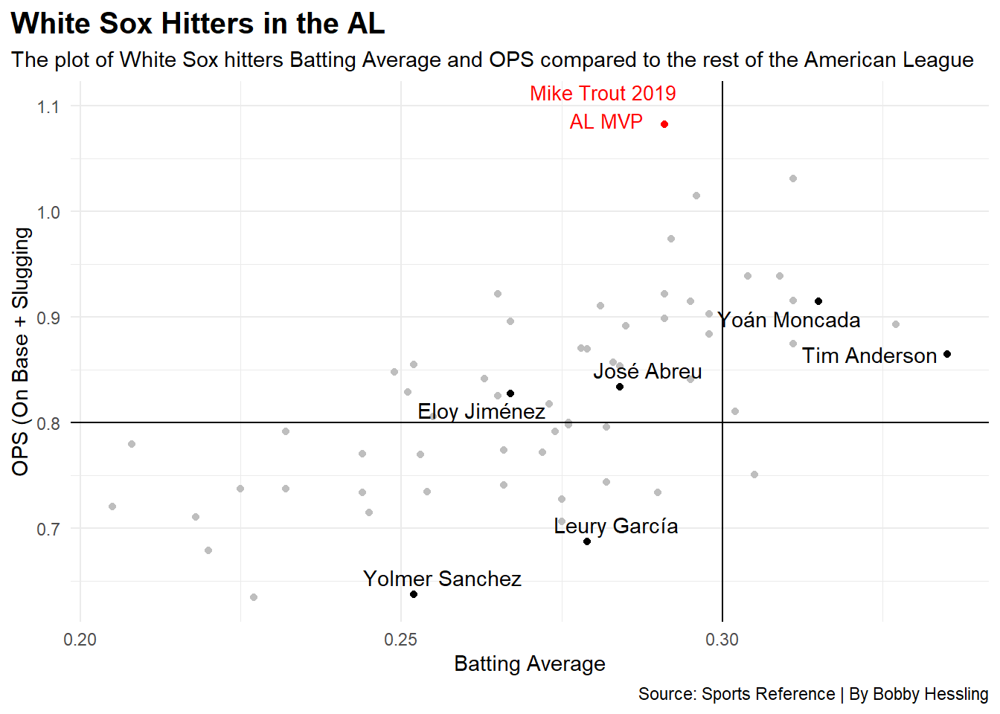
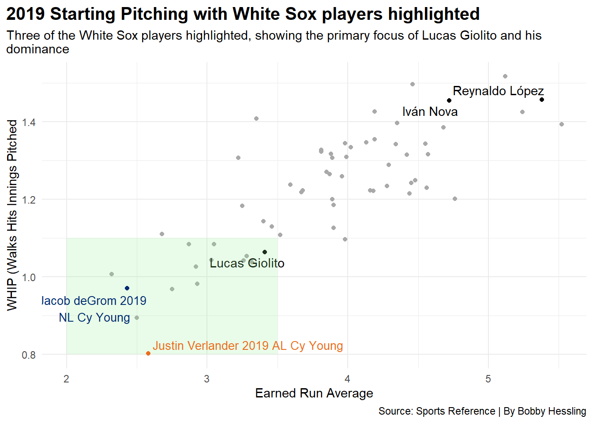
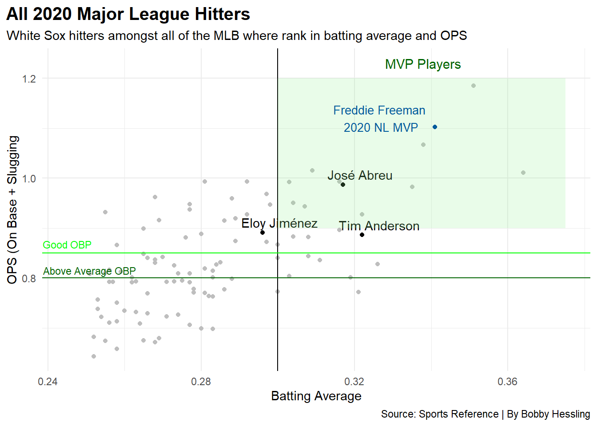
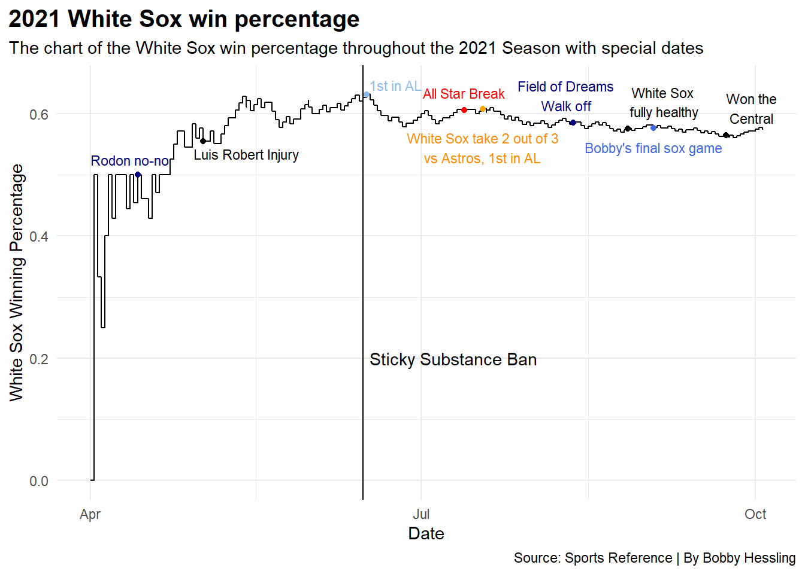
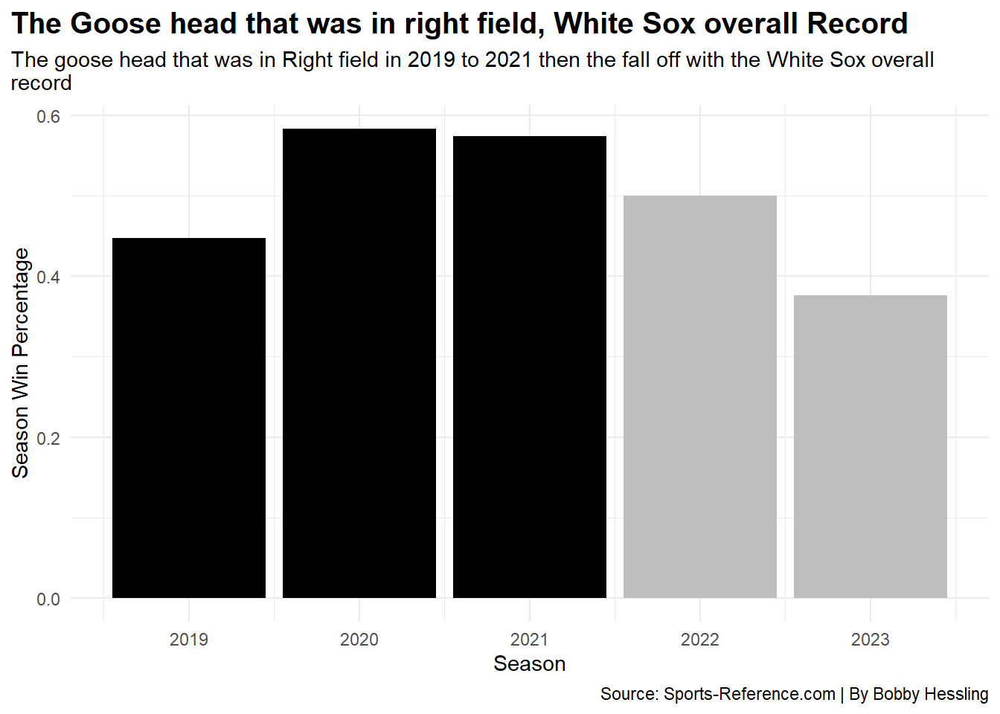

The White Sox have been historically bad. If you removed every teams best season over the last 100 years, only the White Sox and Washington Nationals are the two Major League franchises who would have never won a PLAYOFF SERIES. Yes a playoff series. Outside of 2005 the next White Sox season where they won a playoff series was 1917, where the won the World Series.
This was the Kenny Williams Timeline over his years as the White Sox Gneral Manager and Vice President of Baseball Operations. It looks frustrating.
The White Sox need to get good, the best way to get good is rehaul, get young talent build a core and control them for a long period of time. Little did people know on July 23rd 2016 this would soon happen for the White Sox.
Enter Chris Sale.
Chris Sale cutup uniforms. Yes, he cutup uniforms. The White Sox were planning on wearing their 1976 jerseys. Sale did not like that as they were uncomfortable. “Sale asked that they not wear (throwbacks) on his day because they are uncomfortable. Things escalated when they wouldn’t relent” - Ken Rosenthal on twitter.
Sale ended up being sent home and was traded to the Boston Red Sox on December 6th 2016. This begun the rebuild. Years of mediocrity for the White Sox and it was time to blow it up. Sale was traded for one of the best prospects, INF Yoan Moncada, RHP Michael Kopech, OF Luis Alexander Basabe, and RHP Victor Diaz.
Moncada and Kopech were the prizes for the White Sox. The Sox didn’t stop there. They traded Adam Eaton to the Washington Nationals for RHP Lucas Giolito, RHP Reynaldo Lopez, and RHP Dane Dunning. Again highly regarded prospects.
In 2017 the White Sox traded LHP Jose Quintana to the Chicago Cubs for RHP Dylan Cease and OF Eloy Jimenez. Weeks later they traded 1B/3B Todd Frazier and RHP David Robertson to the New York Yankees for Blake Rutherford, Ian Clarkin, and Tito Polin. This traded ended up not panning out on either side.
The White Sox all of a sudden had 10 of MLB’s top 100 prospects
The White Sox have some real talent. Develop the guys correctly and the White Sox would be in good hands. They had one of the best farm systems in the MLB. They were with the Atlanta Braves who are highlighted in Red below and the San Diego Padres, highlighted in gold below. Here is how they panned out.
The Braves rebuild did start years before the White Sox, but what the hell happened? Peaking in 2020 and 2021 then falling like a rock in water. 2021 is the season where events take place that question this down fall, and why the White Sox couldn’t have been like the Braves who consistently get better and better.
Was it Tony La Russa getting hired as the White Sox manager on October 29th 2020? Did he close the playoff window when he was hired? Its possible. La Russa was 76 years old when he was re-hired by the White Sox after he was fired in 1986 by Hawk Harelson. White Sox owner and chairman Jerry Reinsdorf always “regretted” the decision of firing La Russa. But lets not get ahead of ourselves.
Why did White Sox fans by into the hype? Well they jad every reason too, Yoan Moncada in 2019 was living up to his high expectations.
Code
hitters2019 <-read_csv("hitters2019.csv") |>mutate(Name =gsub("*","", Name, fixed=TRUE)) |>mutate(Name =gsub("#","", Name, fixed=TRUE))whitesoxhitters <- hitters2019 |>filter(Tm =="CHW")thirdbase2019 <- hitters2019 |>filter( Position =="*5"| Position =="56"| Position =="*5/DH"| Position =="*5/H"| Position =="*5/HD6"| Position =="*5H/D4"| Position =="*597/3DH"| Position =="*5H4/37"| Position =="*5/HD"| Position =="*54/HD"| Position =="*56/H"| Position =="*5H"| Position =="54/HD" )ggplot() +geom_point(data=thirdbase2019, aes(x=BatAvg, y=OPS)) +geom_text_repel(data=thirdbase2019, aes(x=BatAvg, y=OPS, label=Name) ) +geom_rect(aes(xmin=.30, xmax=.318, ymin=0.9, ymax=1), fill="lightgreen", alpha=.2) +geom_text(aes(x=.309, y=1.01, label="The Box of Excellence"), size=4, color="darkgreen") +labs(x="Batting Average", y="OPS (On Base + Slugging", title="2019 Third Baseman", subtitle="Where 14 third baseman in 2019 stack up amongst each other", caption="Source: Sports Reference | By Bobby Hessling" ) +theme_minimal()

Top three third baseman in 2019 off of average and ops at age 24, yeah he’s going to be a superstar. It didn’t stop there, plenty of White Sox players were in some good company.
Code
ggplot() +geom_point(data=hitters2019, aes(x=BatAvg, y=OPS), color="grey" ) +geom_point(data=whitesoxhitters,aes(x=BatAvg, y=OPS), color="black" ) +geom_vline(xintercept =0.30) +geom_hline(yintercept =0.80, color="darkgreen") +geom_hline(yintercept =0.85, color="green") +geom_text_repel(data=whitesoxhitters, aes(x=BatAvg, y=OPS, label=Name) ) +geom_text(aes(x=.205, y=.868, label="Good OBP"), size=3, color="green") +geom_text(aes(x=.211, y=.815, label="Above Average OBP"), size=3, color="darkgreen") +geom_rect(aes(xmin=.30, xmax=.34, ymin=0.9, ymax=1.15), fill="lightgreen", alpha=.2) +geom_text(aes(x=.3205, y=1.17, label="MVP Players"), size=4, color="darkgreen") +geom_point(aes(x=.291, y=1.083), color="red") +geom_text(aes(x=.282, y=1.1, label="Mike Trout 2019 AL MVP"), size=3.5, color="red") +geom_point(aes(x=.305, y=1.035), color="#005A9C") +geom_text(aes(x=.3113, y=1.087, label="Cody Bellinger 2019 NL MVP"), size=3.5, color="#005A9C") +labs(x="Batting Average", y="OPS (On Base + Slugging", title="All 2019 Major League Hitters", subtitle="White Sox hitters amongst all of the MLB where rank in batting average and OPS", caption="Source: Sports Reference | By Bobby Hessling" ) +theme_minimal()
First of all, Mike trout is a special player to be batting at .291 and having his OPS north of 1.000.
But these are the 5 players that qualified in the MVP Player box, there were only five in the American League.
Code
alhitters <- hitters2019 |>filter(Lg =="AL")almvp2019 <- alhitters |>filter(OPS >0.900& BatAvg >0.300)ggplot() +geom_point(data=almvp2019, aes(x=BatAvg, y=OPS), size =3, color="black") +geom_text(aes(x=0.3135, y=0.923, label=".315/.367/.548/ 25 HR/ 79 RBI"), size=3, color="black") +geom_text(aes(x=0.3105, y=1.015, label=".311/.392/.639/ 41 HR/ 108 RBI"), size=3, color="black") +geom_text(aes(x=0.3097, y=0.923, label=".311/.361/.555/ 32 HR/ 115 RBI"), size=3, color="black") +geom_text(aes(x=0.3054, y=0.948, label=".304/.383/.557/ 36 HR/ 105 RBI"), size=3, color="black") +geom_text(aes(x=0.3095, y=0.954, label=".309/.384/.555/ 33 HR/ 117 RBI"), size=3, color="black") +geom_text(aes(x=0.3135, y=0.916, label="Yoan Moncada"), size=5, color="black") +geom_text(aes(x=0.3105, y=1.023, label="Nelson Cruz"), size=5, color="black") +geom_text(aes(x=0.3096, y=0.916, label="Rafael Devers"), size=5, color="black") +geom_text(aes(x=0.3054, y=0.94, label="J.D. Martinez"), size=5, color="black") +geom_text(aes(x=0.3095, y=0.947, label="Xander Bogaerts"), size=5, color="black") +labs(x="Batting Average", y="OPS (On Base + Slugging", title="2019 AL Players that could be an MVP canadidate", subtitle="Zoomed in image of where Yoan Moncada stacked up against someof the best hitters in the American League", caption="Source: Sports Reference | By Bobby Hessling" ) +theme_minimal()
Red Sox were damn good in 2019, Nelson Cruz hits tanks and look, 24 year Yoan Moncada. Yoan is going to be a superstar. Even in the under 25 category, he was ahead of some big names.
Code
under25hitters <- hitters2019 |>filter(Age <25)ggplot() +geom_point(data=under25hitters, aes(x=BatAvg, y=OPS), size =2.25, color="black") +geom_text_repel(data=under25hitters, aes(x=BatAvg, y=OPS, label=Name), size=3.5 ) +geom_rect(aes(xmin=.30, xmax=.325, ymin=0.9, ymax=1.07), fill="lightgreen", alpha=.2) +geom_point(aes(x=.315, y=.915), sixe=2.5, color="blue") +geom_text(aes(x=.3211, y=.896, label="Yoan Moncada"), size=3.5, color="blue") +labs(x="Batting Average", y="OPS (On Base + Slugging", title="2019 MLB hitters under the age of 25", subtitle="MLB hitters under the age of 25 based off Batting Average and OPS", caption="Source: Sports Reference | By Bobby Hessling" ) +theme_minimal()
Warning in geom_point(aes(x = 0.315, y = 0.915), sixe = 2.5, color = "blue"):
Ignoring unknown parameters: `sixe`
In the American League the White Sox had names jump off the page.
Code
alhitters2019 <- hitters2019 |>filter(Lg =="AL")ggplot() +geom_point(data=alhitters2019, aes(x=BatAvg, y=OPS), color="grey") +geom_point(data=whitesoxhitters,aes(x=BatAvg, y=OPS), color="black" ) +geom_vline(xintercept =0.30) +geom_hline(yintercept =0.8) +geom_text_repel(data=whitesoxhitters, aes(x=BatAvg, y=OPS, label=Name) ) +geom_point(aes(x=.291, y=1.083), color="red") +geom_text(aes(x=.282, y=1.1, label="Mike Trout 2019 AL MVP"), size=3.5, color="red") +labs(x="Batting Average", y="OPS (On Base + Slugging", title="White Sox Hitters in the AL", subtitle="The plot of White Sox hitters Batting Average and OPS compared to the rest of the American League", caption="Source: Sports Reference | By Bobby Hessling" ) +theme_minimal()

Tim Anderson was the 2019 Batting Champion, Abreu and Jimenez both were solid. This doesn’t factor in Luis Robert who was going to debut in 2020. The White Sox talent was there, a few more acquisitions would help but that’’ come later
Moncada wasn’t the only White Sox player in 2019 that had a breakout season, Tim Anderson joined the fun and you could argue he was on of the best hitters in baseball, and was better than Cubs shortstop Javie Baez
Code
shortstop2019 <- hitters2019 |>filter( Position =="*6"| Position =="*6/DH"| Position =="*6D/H"| Position =="*6/H"| Position =="*6/HD7"| Position =="*6/3H4"| Position =="*6/HD5"| Position =="*6/D")ggplot() +geom_point(data=shortstop2019, aes(x=BatAvg, y=OPS)) +geom_text_repel(data=shortstop2019, aes(x=BatAvg, y=OPS, label=Name) ) +geom_rect(aes(xmin=.3, xmax=.340, ymin=0.850, ymax=1), fill="lightgreen", alpha=.2) +geom_hline(yintercept =0.85, color="green") +geom_text(aes(x=.205, y=.868, label="Good OBP"), size=3, color="green") +geom_text(aes(x=.329, y=.848, label="Tim Anderson"), size=4, color="blue") +geom_text(aes(x=.2758, y=.834, label="Javier Baez"), size=4, color="blue") +geom_point(aes(x=.335, y=.865), color="blue") +geom_point(aes(x=.281, y=.847), color="blue") +labs(x="Batting Average", y="OPS (On Base + Slugging", title="20 of the 2019 Shortstops", subtitle="Where the 20 shortstops stacked up against one another when it came to Batting Average and OPS", caption="Source: Sports Reference | By Bobby Hessling" ) +theme_minimal()
Numbers don’t lie, better OPS, better batting average, Tim didn’t hit for the power Baez did, but he surely didn’t strikeout as much. Defensively however…
Code
fielding19 <-read_csv("fielding19.csv")
Rows: 1400 Columns: 24
── Column specification ────────────────────────────────────────────────────────
Delimiter: ","
chr (5): Name, Tm, Lg, Pos, Name-additional
dbl (19): Rk, Age, Games, Starts, CG, Inn, Ch, PO, A, Errors, DP, FldPCT, Rt...
ℹ Use `spec()` to retrieve the full column specification for this data.
ℹ Specify the column types or set `show_col_types = FALSE` to quiet this message.
Code
fielders2019 <- fielding19 |>filter(Starts >121)shortstops2019 <- fielders2019 |>filter( Pos =="SS"| Pos =="SS-3B")ggplot() +geom_point(data=shortstops2019, aes(x=Errors, y=FldPCT)) +geom_text_repel(data=shortstops2019, aes(x=Errors, y=FldPCT, label=Name) ) +labs(x="Erros", y="Fielding Percentage", title="Shortstops and their defensive ranking", subtitle="Tim Anderson was one of the worst defensive shortstops in 2019", caption="Source: Sports Reference | By Bobby Hessling" ) +theme_minimal()
Tim Anderson’s defense will need to improve, especially at shortstop, but when you have a standout pitcher on the mound, it’s easy.
Lucas Giolito was horrific in the 2018 season and his 2019 campaign was brilliant
Code
pitching2019 <-read_csv("pitching2019.csv")
Rows: 62 Columns: 36
── Column specification ────────────────────────────────────────────────────────
Delimiter: ","
chr (4): Name, Tm, Lg, Name-additional
dbl (32): Rk, Age, W, L, W-L%, ERA, G, GS, GF, CG, SHO, SV, IP, H, R, ER, HR...
ℹ Use `spec()` to retrieve the full column specification for this data.
ℹ Specify the column types or set `show_col_types = FALSE` to quiet this message.
Code
whitesoxpitching <- pitching2019 |>filter(Tm =="CHW")alpitching2019 <- pitching2019 |>filter(Lg =="AL")giolito <- pitching2019 |>filter(Name =="Lucas Giolito")ggplot() +geom_point(data=alpitching2019, aes(x=ERA, y=WHIP) ) +geom_point(data=giolito,aes(x=ERA, y=WHIP) ) +geom_text_repel(data=alpitching2019, aes(x=ERA, y=WHIP, label=Name) ) +geom_text(data=giolito, aes(x=3.55, y=1.095, label=Name), color="blue" ) +geom_rect(aes(xmin=2.45, xmax=3.5, ymin=0.8, ymax=1.1), fill="lightgreen", alpha=.2) +labs(x="Earned Run Average", y="WHIP (Walks Hits Innings Pitched", title="2019 American League Starting Pitching", subtitle="Highlighting Lucas Giolito in where he ranks compared to the rest of teh American League starters", caption="Source: Sports Reference | By Bobby Hessling" ) +theme_minimal()
Giolito was a Top five pitcher in the American League during 2019. In the same converstaions with Verlander, Gerrit Cole, Shane Bieber, and Charlie Morton. Not only that, was in conversations with the best in the Major Leagues
Code
ggplot() +geom_point(data=pitching2019, aes(x=ERA, y=WHIP), color="darkgrey") +geom_point(data=whitesoxpitching, aes(x=ERA, y=WHIP), color="black" ) +geom_text_repel(data=whitesoxpitching, aes(x=ERA, y=WHIP, label=Name) ) +geom_rect(aes(xmin=2, xmax=3.5, ymin=0.8, ymax=1.1), fill="lightgreen", alpha=.2) +geom_point(aes(x=2.43, y=0.971), color="#002D72") +geom_text(aes(x=2.2, y=0.919, label="Jacob deGrom 2019 NL Cy Young"), size=3.5, color="#002D72") +geom_point(aes(x=2.58, y=0.803), color="#EB6E1F") +geom_text(aes(x=3.29, y=0.825, label="Justin Verlander 2019 AL Cy Young"), size=3.5, color="#EB6E1F") +labs(x="Earned Run Average", y="WHIP (Walks Hits Innings Pitched", title="2019 Starting Pitching with White Sox players highlighted", subtitle="Three of the White Sox players highlighted, showing the primary focusof Lucas Giolito and his dominance", caption="Source: Sports Reference | By Bobby Hessling" ) +theme_minimal()

Giolito was great, Lopez on the other hand, not so much. Maybe he just isn’t apart of the plans for this rebuild. Giolito also being 24 years old helped as he was one of the best under the age of 25.
Now 2020. The White Sox begin the season with an unknown in a Covid shortened season. They had added one of the best catchers in Baseball Yasmani Grandal. The biggest question mark was the pitching for the White Sox, even after the addition of Dallas Keuchel. The offense was there, but the pitching be good enough.
Code
whitesoxgame <- mlbgamelogs |>group_by(Season, Tm) |>filter(Tm =="CHW") |>mutate(WinPCT = Wins/(Wins + Losses)) |>select(Tm, Season, WinPCT, Home, Away, Wins, Losses, Date)CWS2020 <- whitesoxgame |>filter(Season =="2020")ggplot() +geom_step(data=CWS2020, aes(x=Date, y=WinPCT, group=Tm)) +geom_point(aes(x=as.Date("2020-08-31"), y=.628), color="#002B5C") +geom_text(aes(x=as.Date("2020-08-28"), y=.65, label="1st in AL Cent"), size=3, color="#002B5C") +geom_point(aes(x=as.Date("2020-08-09"), y=.500), color="black") +geom_text(aes(x=as.Date("2020-08-09"), y=.420, label="On Sunday Night baseballfor first time since 2013"), size=3, color="black") +geom_point(aes(x=as.Date("2020-08-21"), y=.592), color="#0E3386") +geom_text(aes(x=as.Date("2020-08-17"), y=.625, label="Sox hit 6 home runsoff the Cubs"), size=3, color="#0E3386") +geom_point(aes(x=as.Date("2020-09-06"), y=.634), color="royalblue") +geom_text(aes(x=as.Date("2020-09-06"), y=.66, label="Sox 2nd in AL"), size=3, color="royalblue") +geom_point(aes(x=as.Date("2020-09-17"), y=.660), color="black") +geom_text(aes(x=as.Date("2020-09-17"), y=.710, label="White Sox clinch first playoff bid since 2008, Best record in AL"), size=3, color="black") +geom_point(aes(x=as.Date("2020-09-21"), y=.629), color="#134A8E") +geom_text(aes(x=as.Date("2020-09-16"), y=.610, label="Sox Divsion Choke"), size=3, color="#134A8E") +geom_point(aes(x=as.Date("2020-08-26"), y=.612), color="black") +geom_text(aes(x=as.Date("2020-08-31"), y=.58, label="Lucas Giolito No-No"), size=3, color="black") +labs(x="Date", y="White Sox Winning Percentage", title="2020 White Sox winning percentage", subtitle="The chart of the White Sox win percentage throughout the 2020 Seasonwith special dates", caption="Source: Sports Reference | By Bobby Hessling" ) +theme_minimal()
At the end of August the White Sox were the best team in the AL Central. This point in the season, Sox fans hadn’t seen that since 2012, where they choked the division away, which ended up happening. The White Sox clinched their first post season bid since 2008. It had been 12 years.
The White Sox were also first in the American League. Was this real life? It was.
But it’s not all sunshine and rainbows.
The White Sox lost 2 out of 3 to the Cincinnati Reds, didn’t seem too bad. The White Sox had a massive four game series against the Cleveland Indians. The White Sox lost all of them. Two walks off’s bullpen collapses.
In 7 days the White Sox went from the top spot in the American League and a three game advantage in the Central, to the 4th spot in the American League and 2nd in the central. Absolute heartbreak and frustration.
Playoff baseball and the White Sox ended up as the 7th seed in the American League Playoff bracket. They had a date with the Oakland Athletics in the AL Wild Card Round.
The White Sox took Game 1 over the A’s inside the Coliseum. Lucas Giolito went 7 Innings, allowed 2 hits, 1 run which was earned and struck out 8 batters while he was perfect through the first 6 innings.
The White Sox ended up losing Game 2, and Game 3 was a total meltdown.
The White Sox jumped out in-fornt 3-0 but poor bullpen management using nine pitchers, yes NINE pitchers in game 3. With Carlos Rodon blowing the lead in the 5th inning. The White Sox never scored again. Their season was over.
There were bright spots in the season. Jose Abreu was the MVP, Luis Robert looked great, Dallas Keuchel looked great, Lucas Giolito showed flashes, Eloy looked good it was all coming together.
Code
hitters2020 <-read_csv("hitters2020.csv") |>mutate(Name =gsub("*","", Name, fixed=TRUE)) |>mutate(Name =gsub("#","", Name, fixed=TRUE))goodhitters2020 <- hitters2020 |>filter(G >45& BatAvg >0.250)whitesoxhitters2020 <- goodhitters2020 |>filter(Tm =="CHW")ggplot() +geom_point(data=goodhitters2020, aes(x=BatAvg, y=OPS), color="grey" ) +geom_point(data=whitesoxhitters2020,aes(x=BatAvg, y=OPS), color="black" ) +geom_vline(xintercept =0.30) +geom_hline(yintercept =0.80, color="darkgreen") +geom_hline(yintercept =0.85, color="green") +geom_text_repel(data=whitesoxhitters2020, aes(x=BatAvg, y=OPS, label=Name) ) +geom_text(aes(x=.245, y=.868, label="Good OBP"), size=3, color="green") +geom_text(aes(x=.251, y=.815, label="Above Average OBP"), size=3, color="darkgreen") +geom_rect(aes(xmin=.300, xmax=.375, ymin=0.9, ymax=1.2), fill="lightgreen", alpha=.2) +geom_text(aes(x=.338, y=1.23, label="MVP Players"), size=4, color="darkgreen") +geom_point(aes(x=.341, y=1.102), color="#005A9C") +geom_text(aes(x=.327, y=1.12, label="Freddie Freeman 2020 NL MVP"), size=3.5, color="#005A9C") +labs(x="Batting Average", y="OPS (On Base + Slugging", title="All 2020 Major League Hitters", subtitle="White Sox hitters amongst all of the MLB where rank in batting average and OPS", caption="Source: Sports Reference | By Bobby Hessling" ) +theme_minimal()

The 2020 AL MVP, the White Sox very own Jose Abreu!
Couldn’t but recognize, where is Moncada? Why were Jimenez, Abreu, and Anderson the only players featured? Moncada caught Covid-19 prior to the 2020 season and it greatly affected his ability to play. Low stanima, easily winded, didn’t have the same ability that he did in 2020. Would this be a one year thing? Hopefully.
Luis Robert had a brutal month of September where he batted .136 which led him to finish with a .233 batting average. That happens pitchers learn how to pitch to certain players and that player needs to adjust.
Back to Abreu the batting average and OPS helped solidify his MVP but how about averaging an RBI per game. In 60 games Abreu had 60 RBI’s that lead the majors.
Code
rbi2020 <- goodhitters2020 |>select(Tm, Name, RBI) |>filter(RBI >41) |>arrange(desc(RBI)) rbi2020 |>gt() |>cols_label(RBI ="RBI" ) |>tab_header(title ="2020 MLB RBI Season Leaders",subtitle ="Jose Abreu led all of the Majors in RBI's in 2020" ) |>tab_style(style =cell_text(color ="black", weight ="bold", align ="left"),locations =cells_title("title") ) |>tab_style(style =cell_text(color ="black", align ="left"),locations =cells_title("subtitle") ) |>tab_source_note(source_note =md("**By:** Bobby Hessling | **Source:** MLB Sports Reference") ) |>tab_style(locations =cells_column_labels(columns =everything()),style =list(cell_borders(sides ="bottom", weight =px(3)),cell_text(weight ="bold", size=12) ) ) |>opt_row_striping() |>opt_table_lines("none")
2020 MLB RBI Season Leaders
Jose Abreu led all of the Majors in RBI's in 2020
Tm
Name
RBI
CHW
José Abreu
60
ATL
Marcell Ozuna
56
ATL
Freddie Freeman
53
NYY
Luke Voit
52
SDP
Manny Machado
47
CLE
José Ramírez
46
LAA
Mike Trout
46
SDP
Fernando Tatis Jr.
45
BOS
Rafael Devers
43
COL
Charlie Blackmon
42
MIN
Eddie Rosario
42
NYM
Dominic Smith
42
HOU
Kyle Tucker
42
By: Bobby Hessling | Source: MLB Sports Reference
It helped in the Cubs series at Wrigley that he had 9 RBI’s in 3 games, to add on to his 60 RBI’s he had.
White Sox still needed to address certain needs. They needed to bolster the pitching. So they traded Dane Dunning who had an impressive 2020 season, to the Texas Rangers for Lance Lynn. He was an instant impact addition, another veteran starter. They also added a closer, arguably the best, Liam Hendriks. The pitcher that ended their season had joined them.
Code
CWS2021 <- whitesoxgame |>filter(Season =="2021") ggplot() +geom_step(data=CWS2021, aes(x=Date, y=WinPCT, group=Tm)) +geom_vline(xintercept=as.Date("2021-06-15")) +geom_point(aes(x=as.Date("2021-04-14"), y=.500), color="navy") +geom_text(aes(x=as.Date("2021-04-12"), y=.525, label="Rodon no-no"), size=3, color="navy") +geom_point(aes(x=as.Date("2021-06-16"), y=.632), color="#8FBCE6") +geom_text(aes(x=as.Date("2021-06-24"), y=.647, label="1st in AL"), size=3, color="#8FBCE6") +geom_point(aes(x=as.Date("2021-09-23"), y=.565)) +geom_text(aes(x=as.Date("2021-09-30"), y=.610, label="Won theCentral"), size=3) +geom_point(aes(x=as.Date("2021-09-03"), y=.577), color="royalblue") +geom_text(aes(x=as.Date("2021-09-03"), y=.545, label="Bobby's final sox game"), size=3, color="royalblue") +geom_point(aes(x=as.Date("2021-07-18"), y=.608), color="orange") +geom_text(aes(x=as.Date("2021-07-18"), y=.545, label="White Sox take 2 out of 3vs Astros, 1st in AL"), size=3, color="darkorange") +geom_point(aes(x=as.Date("2021-08-27"), y=.576), color="black") +geom_text(aes(x=as.Date("2021-09-06"), y=.620, label="White Sox fully healthy"), size=3, color="black") +geom_point(aes(x=as.Date("2021-08-12"), y=.586), color="navy") +geom_text(aes(x=as.Date("2021-08-10"), y=.63, label="Field of DreamsWalk off"), size=3, color="navy") +geom_point(aes(x=as.Date("2021-07-13"), y=.606), color="red") +geom_text(aes(x=as.Date("2021-07-13"), y=.635, label="All Star Break"), size=3, color="red") +geom_text(aes(x=as.Date("2021-07-10"), y=.2, label="Sticky Substance Ban"), color="black") +geom_point(aes(x=as.Date("2021-05-02"), y=.555), color="black") +geom_text(aes(x=as.Date("2021-05-14"), y=.535, label="Luis Robert Injury"), size=3, color="black") +labs(x="Date", y="White Sox Winning Percentage", title="2021 White Sox win percentage", subtitle="The chart of the White Sox win percentage throughoutthe 2021 Season with special dates", caption="Source: Sports Reference | By Bobby Hessling" ) +theme_minimal()

In the moment no one realizes that they dipped and begun to palteau, It was sketchy, but who cares? The White Sox won the Central for the first time since 2008. Welcome to Soxtober!
October 7th 2021 Then the Houston Astros become an issue. Game 1 the White Sox came out and got dominated by Lance McCullers. 6.2 innings of shutout baseball, allowing 4 hits and striking out 4 batters.
Astros win the first game, 6-1
Game 2, Lucas Giolito back on the bump. Second playoff start for Giolito and in his first, 6 innings of perfection. The Sox jumped out to a 4-2 lead in the 5th. Giolito ended up struggling tying the game up in the 5th and his afternoon was over. Giolito finished with 4.1 IP, 5 Walks Allowed, 4 Strikeouts, and 4 runs, all earned, on 3 hits. The bullpen the fell apart in the 7th inning allowing 9 runs. White Sox drop game 2, 9-4.
Game 3, First home playoff game in 13 seasons. A Sunday night in a blacked out environment at 35th and Shields. Dylan Cease struggled at first, in his first postseason start. He was pulled not even being able to go a full 3 innings. The White Sox bats came to life in that third inning. Luery Garcia had a 3-Run Home Run which gave the sox a 6-5 lead and they never looked back. Sox won 12-6. Sox are still alive.
Game 4, Carlos Rodon makes his playoff start. Came out throwing Gas. After 2 innings from Rodon, Gavin Sheets had lift off into center field. Sox lead 1-0. They would not lead again. The bullpen couldn’t sustain the brutal blow from Houston. In the ninth Jose Altuve hit a 3-Run Home Run that made it 10-1. White Sox season is over.
Heartbreak on the southside
The White Sox compared to the rest of the America League, the fizzled out towards the end which to make a postseason run is not ideal. But at the end of the day all five AL playoff teams essentially merged together.
Code
TopAL <- mlbgamelogs |>group_by(Season, Tm) |>filter( Tm =="CHW"| Tm =="TBR"| Tm =="HOU"| Tm =="BOS"| Tm =="NYY" ) |>mutate(WinPCT = Wins/(Wins + Losses)) |>select(Tm, Season, WinPCT, Home, Away, Wins, Losses, Date) TopAL2021 <- TopAL |>filter(Season =="2021")NYY2021 <- TopAL2021 |>filter(Tm =="NYY")TBR2021 <- TopAL2021 |>filter(Tm =="TBR")HOU2021 <- TopAL2021 |>filter(Tm =="HOU")BOS2021 <- TopAL2021 |>filter(Tm =="BOS")ggplot() +geom_step(data=TopAL2021, aes(x=Date, y=WinPCT, group=Tm, color=Tm)) +scale_color_manual(values =c("red","black", "orange", "navy", "cyan")) +geom_vline(xintercept=as.Date("2021-06-16"), color="darkred") +geom_text(aes(x=as.Date("2021-07-16"), y=.2, label="Sticky Substance Ban"), color="darkred") +labs(x="Date", y="Winning Percentage", title="2021 American league playoff teams over the season", subtitle="The five American league playoff teams and their winning percentagesover the course of the 2021 season", caption="Source: Sports Reference | By Bobby Hessling" ) +theme_minimal()
What caused this regression on the southside? There a series of reasons.
Could it have been me? The White Sox record after I watch my first game in my Freshman year dorm? Since I that first pitch of the Sox game on August 18th 2021, they are 165-201 (.450). This doesn’t included the pitiful start to 2024.
Was it me? Was it watching the Sox play while I watched in Abel Hall? Possibly
Was it my final White Sox game at Guaranteed Rate Field? July 19th the White Sox walked off the Minnesota Twins in Game 2 of a double header. The White Sox were at first in the AL at the end of the night at a 57-37 record. Since that game they are 178-214 (.454).
But they still ended the season with a winning record after both of those events? Yeah sure it was close to a .500 record but its something else?
Enter the Goose.
How the hell does this goose have anything to do with the White Sox winning?
First lets introduce the goose. It was in right field from 2019-2021 apart of the Goose Island Beer Company, one of the official beer sponsors for the White Sox during that time. But following 2021 the White Sox switched to Miller as their official beer sponsor. Goodbye Goose, what happens after really makes you question did the goose have and impact.
White Sox Home Record from 2019-2021: 110-81 (.575)
White Sox Home Record from 2022-2023: 68-95 (.417)
Interseting, there wasn’t a massive roster overhaul from 2021 to 2022 or 2023. Sure changes were made La Russa and the Sox parted ways but a significant decline? Even the overall record shows the drop off
Code
CWS1921 <- whitesoxgame |>filter( Season =="2019"| Season =="2020"| Season =="2021" ) |>group_by(Season, Tm) |>arrange(Tm, Date) |>filter(Wins ==max(Wins) & Losses ==max(Losses)) |>mutate(WinPCT = Wins/(Wins + Losses)) |>select(Tm, Season, WinPCT, Home, Away)CWS2223 <- whitesoxgame |>filter( Season =="2022"| Season =="2023") |>group_by(Season, Tm) |>arrange(Tm, Date) |>filter(Wins ==max(Wins) & Losses ==max(Losses)) |>mutate(WinPCT = Wins/(Wins + Losses)) |>select(Tm, Season, WinPCT, Home, Away)ggplot() +geom_bar(data=CWS1921, aes(x=Season, weight=WinPCT), fill="black") +geom_bar(data=CWS2223, aes(x=Season, weight=WinPCT), fill="grey") +theme_minimal() +labs(y="Season Win Percentage",title="The Goose head that was in right field, White Sox overall Record", subtitle="The goose head that was in Right field in 2019 to 2021 then the fall off with the White Sox overall record", caption="Source: Sports-Reference.com | By Bobby Hessling" )

This goose being removed may just be the reason. As silly as it sounds the number don’t lie. Sure it could be Jerry Reinsodrf botched the manager hire in 2020 and paid fro it in 2022, or Pedro Grifol can’t figure it out as a White Sox manager which makes all White Sox fans disappointed and can only think “What if.”
What if Yoan stayed healthy and didn’t get covid? What if La Russa wan’t hired, What if the core stayed healthy/ What if the goose never was removed, or heck even added in the first place? We may never know. So all White Sox fans can do is look back to 2019-2021 and remember the fun, remember they hype. Remember the good memories.
Code
ggplot() +geom_step(data=CWS2021, aes(x=Date, y=WinPCT, group=Tm)) +geom_vline(xintercept=as.Date("2021-06-15")) +geom_point(aes(x=as.Date("2021-04-14"), y=.500), color="navy") +geom_text(aes(x=as.Date("2021-04-12"), y=.525, label="Rodon no-no"), size=3, color="navy") +geom_point(aes(x=as.Date("2021-06-16"), y=.632), color="#8FBCE6") +geom_text(aes(x=as.Date("2021-06-24"), y=.647, label="1st in AL"), size=3, color="#8FBCE6") +geom_point(aes(x=as.Date("2021-09-23"), y=.565)) +geom_text(aes(x=as.Date("2021-09-30"), y=.610, label="Won theCentral"), size=3) +geom_point(aes(x=as.Date("2021-09-03"), y=.577), color="royalblue") +geom_text(aes(x=as.Date("2021-09-03"), y=.545, label="Bobby's final sox game"), size=3, color="royalblue") +geom_point(aes(x=as.Date("2021-07-18"), y=.608), color="orange") +geom_text(aes(x=as.Date("2021-07-18"), y=.544, label="White Sox take 2 out of 3vs Astros, 1st in AL"), size=3, color="darkorange") +geom_point(aes(x=as.Date("2021-08-27"), y=.576), color="black") +geom_text(aes(x=as.Date("2021-09-06"), y=.620, label="White Sox fully healthy"), size=3, color="black") +geom_point(aes(x=as.Date("2021-08-12"), y=.586), color="navy") +geom_text(aes(x=as.Date("2021-08-10"), y=.635, label="Field of DreamsWalk off"), size=3, color="navy") +geom_point(aes(x=as.Date("2021-07-13"), y=.606), color="red") +geom_text(aes(x=as.Date("2021-07-13"), y=.635, label="All Star Break"), size=3, color="red") +geom_text(aes(x=as.Date("2021-07-10"), y=.2, label="Sticky Substance Ban"), color="black") +labs(x="Date", y="White Sox Winning Percentage", title="2021 White Sox win percentage", subtitle="The chart of the White Sox win percentage throughoutthe 2021 Season with special dates", caption="Source: Sports Reference | By Bobby Hessling" ) +theme_minimal()
Because all Sox fans feel like this
October 12th 2021, Leury Garcia, Dylan Cease, Carlos Rodon, Lucas Giolito, Aaron Bummer, and Michael Kopech all look on with the rest of the Sox fans. Frustrated after a 10-1 loss in Game 4 of the 2021 ALDS vs the Houston Astros. Every Sox fan can relate to this image after the Sox have crumbled faster then Rome did in 476 BC.